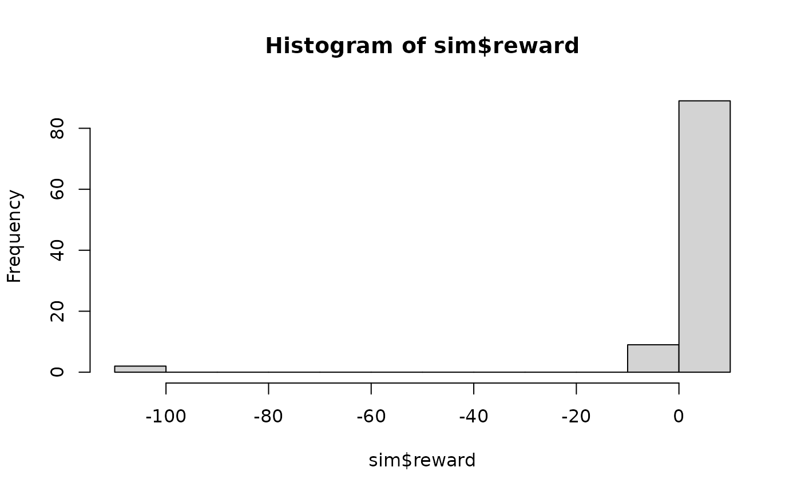
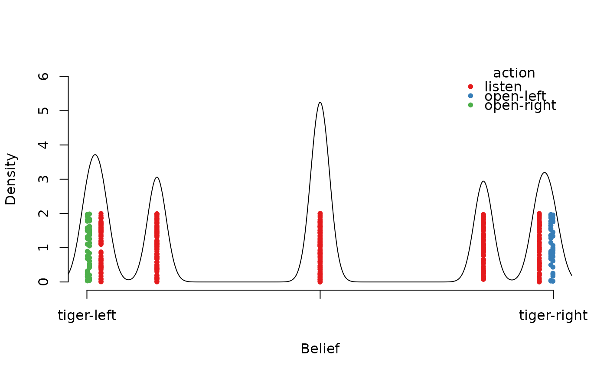
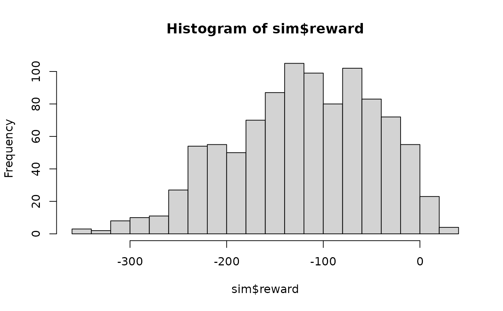
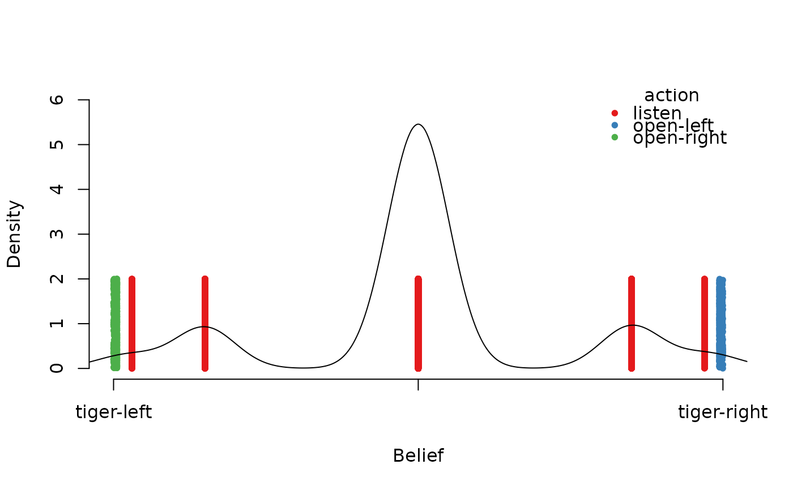

Simulate trajectories through a POMDP. The start state for each trajectory is randomly chosen using the specified belief. The belief is used to choose actions from the epsilon-greedy policy and then updated using observations.
Usage
simulate_POMDP(
model,
n = 1000,
belief = NULL,
horizon = NULL,
epsilon = NULL,
delta_horizon = 0.001,
digits = 7L,
return_beliefs = FALSE,
return_trajectories = FALSE,
engine = "cpp",
verbose = FALSE,
...
)Arguments
- model
a POMDP model.
- n
number of trajectories.
- belief
probability distribution over the states for choosing the starting states for the trajectories. Defaults to the start belief state specified in the model or "uniform".
- horizon
number of epochs for the simulation. If
NULLthen the horizon for a finite-horizon model is used. For infinite-horizon problems, a horizon is calculated using the discount factor.- epsilon
the probability of random actions for using an epsilon-greedy policy. The default for solved models is 0 and for unsolved models is 1.
- delta_horizon
precision used to determine the horizon for infinite-horizon problems.
- digits
round probabilities for belief points.
- return_beliefs
logical; Return all visited belief states? This requires n x horizon memory.
- return_trajectories
logical; Return the simulated trajectories as a data.frame?
- engine
'cpp','r'to perform simulation using a faster C++ or a native R implementation.- verbose
report used parameters.
- ...
further arguments are ignored.
Value
A list with elements:
avg_reward: The average discounted reward.action_cnt: Action counts.state_cnt: State counts.reward: Reward for each trajectory.belief_states: A matrix with belief states as rows.trajectories: A data.frame with theepisodeid,time, the state of the simulation (simulation_state), the id of the used alpha vector given the current belief (seebelief_statesabove), the actionaand the rewardr.
Details
Simulates n trajectories.
If no simulation horizon is specified, the horizon of finite-horizon problems
is used. For infinite-horizon problems with \(\gamma < 1\), the simulation
horizon \(T\) is chosen such that
the worst-case error is no more than \(\delta_\text{horizon}\). That is
$$\gamma^T \frac{R_\text{max}}{\gamma} \le \delta_\text{horizon},$$
where \(R_\text{max}\) is the largest possible absolute reward value used as a perpetuity starting after \(T\).
A native R implementation (engine = 'r') and a faster C++ implementation
(engine = 'cpp') are available. Currently, only the R implementation supports
multi-episode problems.
Both implementations support the simulation of trajectories in parallel using the package
foreach. To enable parallel execution, a parallel backend like
doparallel needs to be registered (see
doParallel::registerDoParallel()).
Note that small simulations are slower using parallelization. C++ simulations
with n * horizon less than 100,000 are always executed using a single worker.
Examples
data(Tiger)
# solve the POMDP for 5 epochs and no discounting
sol <- solve_POMDP(Tiger, horizon = 5, discount = 1, method = "enum")
sol
#> POMDP, list - Tiger Problem
#> Discount factor: 1
#> Horizon: 5 epochs
#> Size: 2 states / 3 actions / 2 obs.
#> Start: uniform
#> Solved:
#> Method: ‘enum’
#> Solution converged: FALSE
#> # of alpha vectors: 29
#> Total expected reward: 3.609150
#>
#> List components: ‘name’, ‘discount’, ‘horizon’, ‘states’, ‘actions’,
#> ‘observations’, ‘transition_prob’, ‘observation_prob’, ‘reward’,
#> ‘start’, ‘info’, ‘solution’
policy(sol)
#> [[1]]
#> tiger-left tiger-right action
#> 1 -97.578750 12.421250 open-left
#> 2 -18.362044 10.711644 listen
#> 3 -13.533937 10.175187 listen
#> 4 -10.494019 9.323169 listen
#> 5 3.609150 3.609150 listen
#> 6 9.323169 -10.494019 listen
#> 7 10.175187 -13.533937 listen
#> 8 10.711644 -18.362044 listen
#> 9 12.421250 -97.578750 open-right
#>
#> [[2]]
#> tiger-left tiger-right action
#> 1 -97.280000 12.720000 open-left
#> 2 -3.258875 5.997625 listen
#> 3 2.421250 2.421250 listen
#> 4 5.997625 -3.258875 listen
#> 5 12.720000 -97.280000 open-right
#>
#> [[3]]
#> tiger-left tiger-right action
#> 1 -102.0000 8.0000 listen
#> 2 -30.4725 7.7525 listen
#> 3 -5.2275 4.9475 listen
#> 4 2.7200 2.7200 listen
#> 5 4.9475 -5.2275 listen
#> 6 7.7525 -30.4725 listen
#> 7 8.0000 -102.0000 listen
#>
#> [[4]]
#> tiger-left tiger-right action
#> 1 -101.00 9.00 listen
#> 2 -16.85 7.35 listen
#> 3 -2.00 -2.00 listen
#> 4 7.35 -16.85 listen
#> 5 9.00 -101.00 listen
#>
#> [[5]]
#> tiger-left tiger-right action
#> 1 -100 10 open-left
#> 2 -1 -1 listen
#> 3 10 -100 open-right
#>
# uncomment the following line to register a parallel backend for simulation
# (needs package doparallel installed)
# doParallel::registerDoParallel()
# foreach::getDoParWorkers()
## Example 1: simulate 100 trajectories
sim <- simulate_POMDP(sol, n = 100, verbose = TRUE)
#> Simulating POMDP trajectories.
#> - method: C++ (cpp)
#> - n: 100
#> - horizon: 5
#> - epsilon: 0
#> - discount factor: 1
#> - starting belief: 0.5 0.5
#>
#> user system elapsed
#> 0.007 0.001 0.007
sim
#> $avg_reward
#> [1] 2.81
#>
#> $reward
#> [1] 6 6 6 6 6 6 6 6 6 6 -5 6 -5 6 6
#> [16] 6 6 6 6 6 -5 6 6 6 6 6 6 -5 6 6
#> [31] 6 -5 6 6 6 6 6 -5 6 6 6 -5 6 6 6
#> [46] 6 6 6 6 6 6 6 6 6 6 6 6 6 6 6
#> [61] 6 6 6 6 6 6 6 -104 6 6 6 6 6 6 6
#> [76] 6 6 6 -5 6 6 6 6 6 6 6 6 6 6 -5
#> [91] 6 6 6 6 6 6 6 6 -104 6
#>
#> $action_cnt
#> listen open-left open-right
#> 409 55 36
#>
#> $state_cnt
#> tiger-left tiger-right
#> 229 271
#>
#> $obs_cnt
#> tiger-left tiger-right
#> 220 280
#>
#> $belief_states
#> <0 x 0 matrix>
#>
#> $trajectories
#> data frame with 0 columns and 0 rows
#>
# calculate the percentage that each action is used in the simulation
round_stochastic(sim$action_cnt / sum(sim$action_cnt), 2)
#> listen open-left open-right
#> 0.82 0.11 0.07
# reward distribution
hist(sim$reward)

## Example 2: look at the belief states and the trajectories starting with
# an initial start belief.
sim <- simulate_POMDP(sol, n = 100, belief = c(.5, .5),
return_beliefs = TRUE, return_trajectories = TRUE)
head(sim$belief_states)
#> tiger-left tiger-right
#> [1,] 0.8500000 0.1500000
#> [2,] 0.9697987 0.0302013
#> [3,] 0.9945344 0.0054656
#> [4,] 0.9990311 0.0009689
#> [5,] 0.5000000 0.5000000
#> [6,] 0.1500000 0.8500000
head(sim$trajectories)
#> episode time simulation_state alpha_vector_id a o r
#> 1 1 0 tiger-left 5 listen tiger-left -1
#> 2 1 1 tiger-left 4 listen tiger-left -1
#> 3 1 2 tiger-left 6 listen tiger-left -1
#> 4 1 3 tiger-left 5 listen tiger-left -1
#> 5 1 4 tiger-left 3 open-right tiger-left 10
#> 6 2 0 tiger-right 5 listen tiger-right -1
# plot with added density (the x-axis is the probability of the second belief state)
plot_belief_space(sol, sample = sim$belief_states, jitter = 2, ylim = c(0, 6))
lines(density(sim$belief_states[, 2], bw = .02)); axis(2); title(ylab = "Density")

## Example 3: simulate trajectories for an unsolved POMDP which uses an epsilon of 1
# (i.e., all actions are randomized). The simulation horizon for the
# infinite-horizon Tiger problem is calculated using delta_horizon.
sim <- simulate_POMDP(Tiger, return_beliefs = TRUE, verbose = TRUE)
#> Simulating POMDP trajectories.
#> - method: C++ (cpp)
#> - n: 1000
#> - horizon: 42
#> - epsilon: 1
#> - discount factor: 0.75
#> - starting belief: 0.5 0.5
#>
#> user system elapsed
#> 0.356 0.017 0.373
sim$avg_reward
#> [1] -120.6051
hist(sim$reward, breaks = 20)

plot_belief_space(sol, sample = sim$belief_states, jitter = 2, ylim = c(0, 6))
lines(density(sim$belief_states[, 1], bw = .05)); axis(2); title(ylab = "Density")
